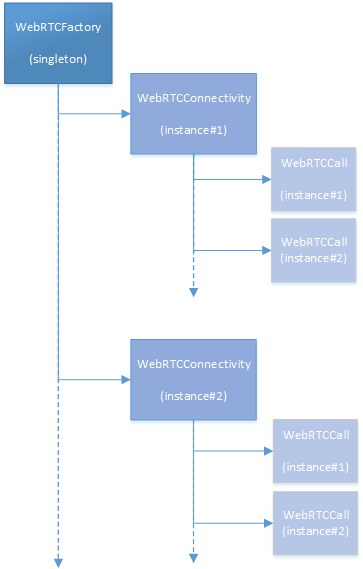

HP WebRTC Client API v0.5
The HP WebRTC Client API is a javascript API which used two external components.
+ Socket.IO which enables the real-time bidirectional event-based communication
+ Lodash which is an utility library delivering consistency, customization, performance.
The following version are fully compatible with our library, the HP SDK may provide a version.
You can also use a content delivery network (CDN):
| Name | Version | Location
| ---------- | -------- | ------------------------------------------------------------
| socket.io | 1.0.6 | cdn.socket.io/socket.io-1.0.6.js
| lodash | 2.4.1 | cdnjs.cloudflare.com/ajax/libs/lodash.js/2.4.1/lodash.min.js
You need to include in your HTML page the two libraries prior the HP WebRTC Client API, for this a simple inclusion of all necessary scripts is needed:
<script type="text/javascript" src="js/lodash.min.js"></script>
<script type="text/javascript" src="js/socket.io.min.js"></script>
<script type="text/javascript" src="js/hp-webrtc-api.min.js"></script>
The hp-webrtc-api.min.js will expose a WebRTCFactory object which is the starting point of the HP WebRTC Client API.The HP WebRTC Client API mainly defines 3 types of objects:
WebRTCFactory: A factory in charge to create connectivities, this is a singleton which is globaly visible in your javascript.
WebRTCConnectivity: A connectivity to an Internet Signaling Function (ISF), an instance of connectivity is a physical link to an ISF.
WebRTCCall: A call to a remote party (e.g., another Web browser, a SIP phone).
